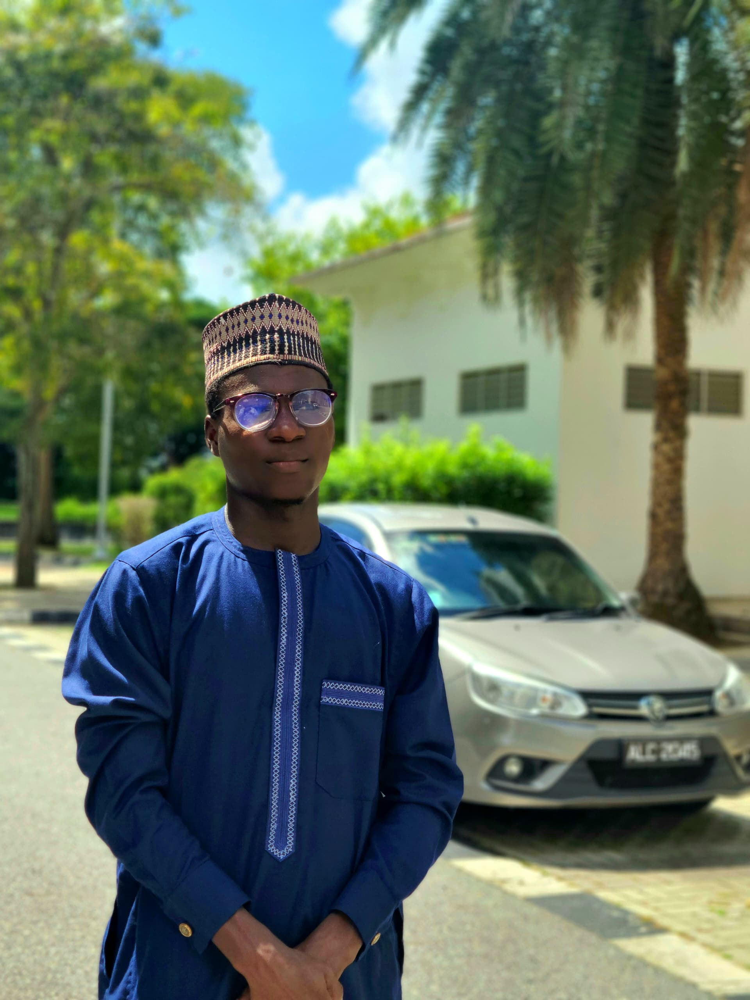

Motivated Computer Science undergraduate specializing in Cybersecurity and Full-Stack Development. Hands-on experience building modern web applications using React, JavaScript, HTML, CSS, Tailwind CSS, Node.js (Express), Spring Boot, and MySQL. Finalist in the Harvard-founded Aspire Leaders Program with strong performance in global computer science competitions. Seeking an internship to apply technical skills, strengthen real-world experience, and contribute to impactful projects.
Hi, I’m Saminu Aminu — a passionate Frontend Developer and Cybersecurity student at Albukhary International University. I love turning ideas into beautiful, responsive web experiences using HTML, CSS, JavaScript, and Tailwind CSS. I'm also an art designer and football enthusiast.
My goal is to become a professional developer who builds secure and user-friendly web applications while exploring the field of cybersecurity.
Outside coding, I enjoy learning about ethical hacking, repairing phones, and creating vinyl wrapping sticker designs. I'm currently an undergraduate student at Albukhary International University.
2 years of experience in Frontend and Backend Development, creating modern, responsive, and accessible websites using HTML, CSS, JavaScript, React, Node.js, Spring Boot, and Tailwind CSS.